Polki and kundan are the two great constants of Indian bridal jewellery — uncut diamonds set in gold foil, and glass or gemstone shards framed in delicate kundan work. Both look regal on camera, both pair beautifully with couture lehengas, and both are frequently confused with each other by first-time brides. This guide breaks down exactly how to choose your set: what the two techniques actually are, which pieces you need, how to match jewellery to your outfit and function, what it should realistically cost, and how to tell real craftsmanship from a rushed job.
Why Polki & Kundan Define the Couture Bridal Look
No other jewellery style photographs like polki and kundan. The uneven, candlelit sparkle of uncut diamonds and the layered enamel-and-stone artistry of kundan work were both born in royal ateliers, which is exactly why they still read as "couture" today — heavy without looking cheap, ornate without looking costume-like.
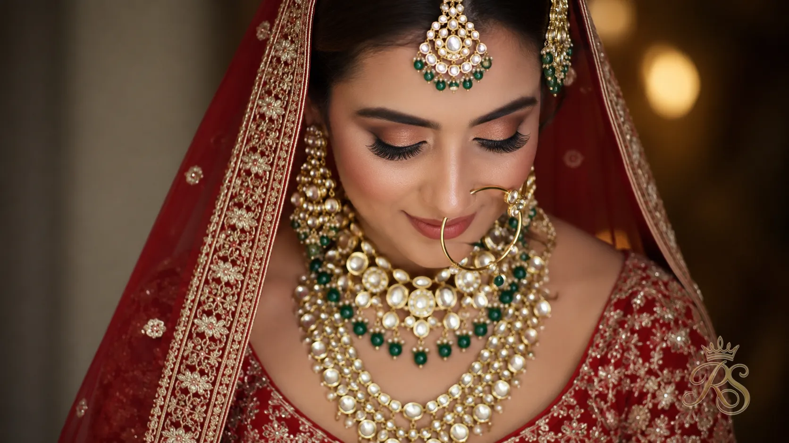
The couture signature: Polki's warm sparkle and kundan's colour depth together create the layered, heirloom look brides are searching for this season.
For a bride who wants photographs that feel timeless rather than trend-driven, polki and kundan remain the safest — and most striking — choice.
Polki suits brides who want an ivory, gold, and diamond-white palette. Kundan is the better base if you want to introduce colour — emerald green, ruby red, or Basra pearl white — into your bridal look.
Polki vs Kundan: What's the Difference
Polki is uncut, unpolished natural diamond set in 24k gold foil — the diamond keeps its raw shape instead of being faceted. Kundan is a setting technique, not a stone: coloured glass, gemstones, or crystals are pressed into gold foil using refined 24k gold known as "kundan." Many couture sets combine both — polki on the front, kundan detailing and coloured stones as accents, with meenakari (enamel) work on the reverse.
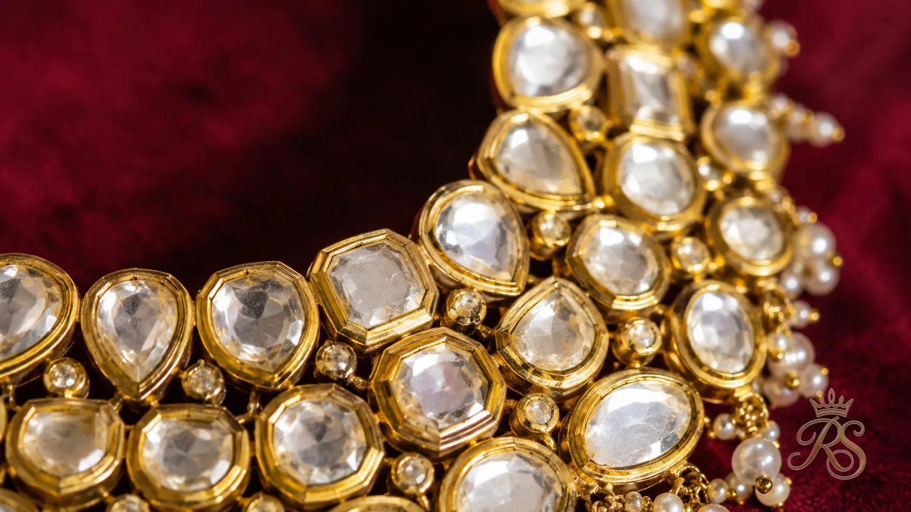
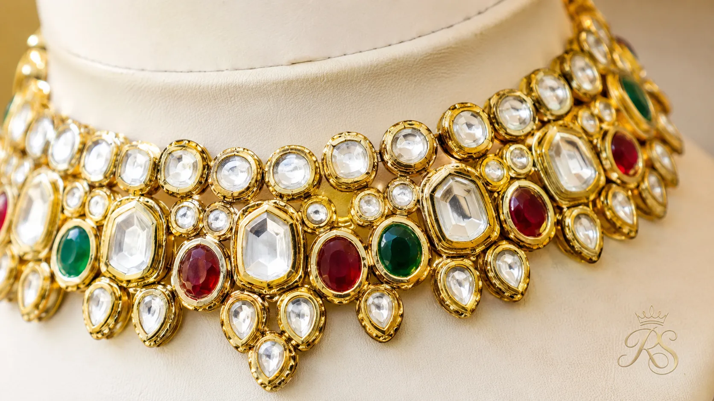
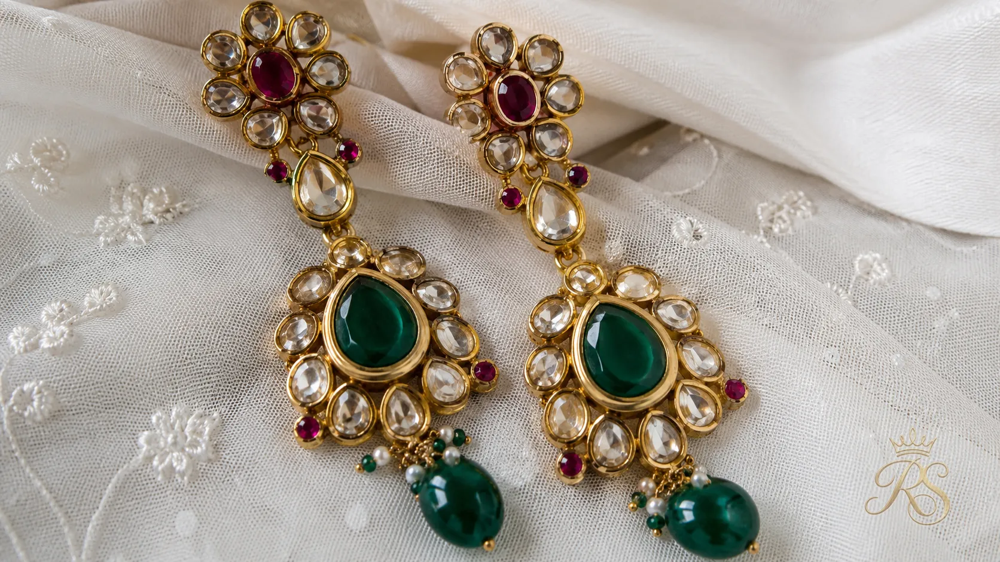
Which One Suits Your Look?
- Choose polki if your lehenga is ivory, gold, blush, or pastel — the diamond-white tone will not compete with your outfit's colour.
- Choose kundan if your lehenga is a strong colour (red, maroon, emerald, teal) — kundan can be colour-matched to echo or contrast your outfit.
- Combine both for a true couture layered look — polki as your statement necklace, kundan jhumkas and maang tikka for colour accents.
Choosing Jewellery for Every Wedding Function
Your wedding-day set is not the set you wear to every event. Building a jewellery wardrobe function-by-function is both more budget-friendly and more photogenic — each event gets a distinct look instead of one repeated set across five days.
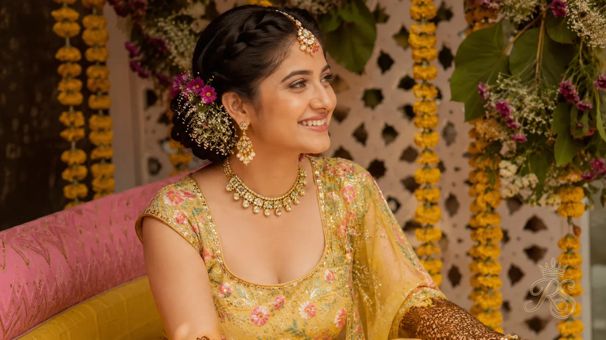
Mehendi: light gold and kundan pieces that won't overwhelm bright colours.
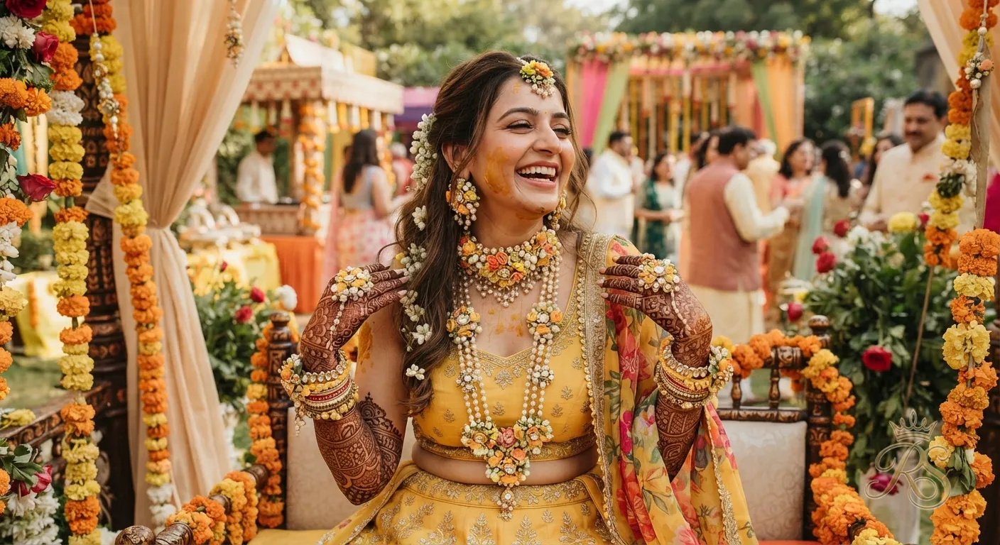
Haldi: floral jewellery paired with minimal kundan detailing.
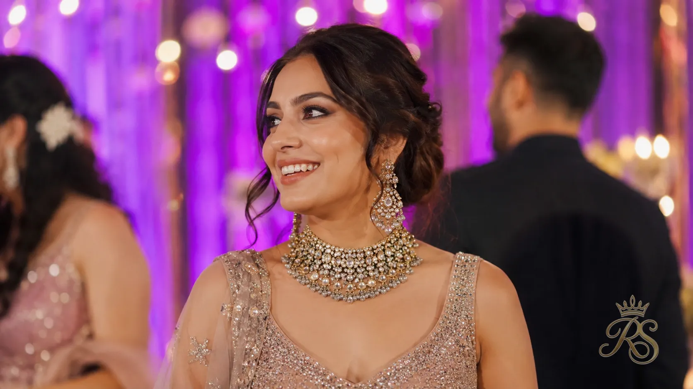
Sangeet: one statement kundan piece — a choker or a long haar.
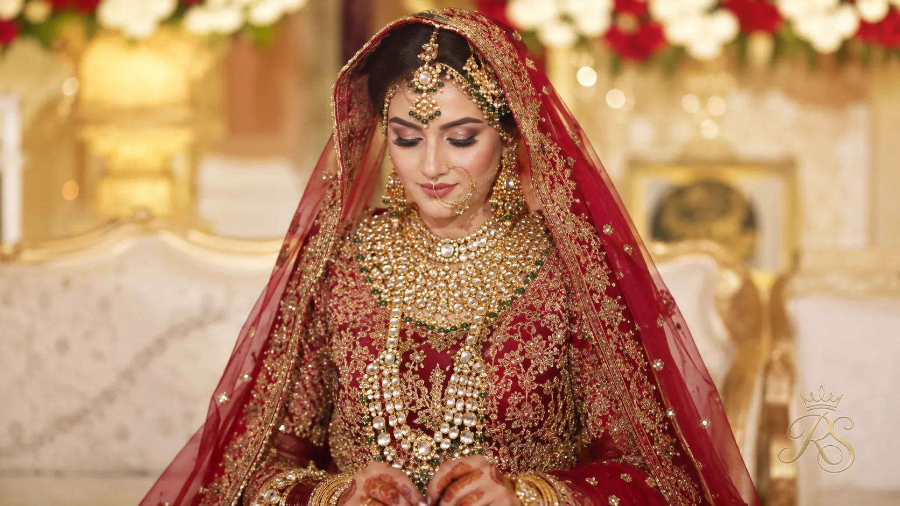
Wedding day: the full polki set — this is where you go all-in.
Save your heaviest, most elaborate polki set for the wedding ceremony and reception. Everything else can be lighter, smaller, and more comfortable to wear through a long day of dancing and photographs.
The Complete Bridal Jewellery Set
A traditional couture bridal set is built from a handful of core pieces. You don't need every single one — but understanding what each does for your look helps you prioritise where to spend.
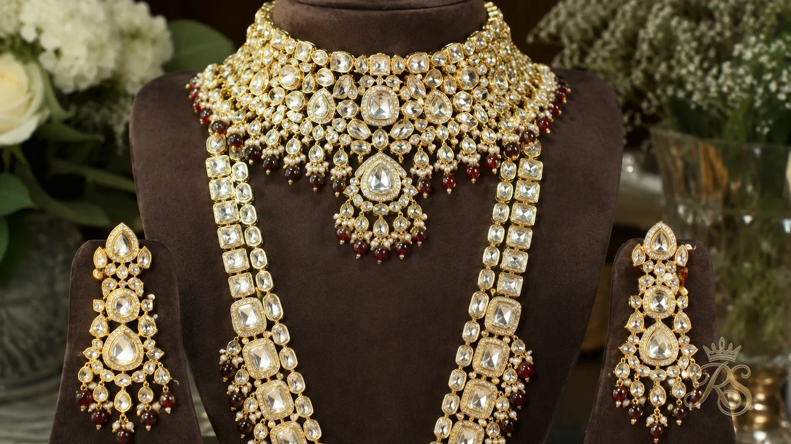
Choker & Necklace (Haar)
The focal point of your bridal look. A layered choker-plus-haar combination is the most requested couture pairing this season.
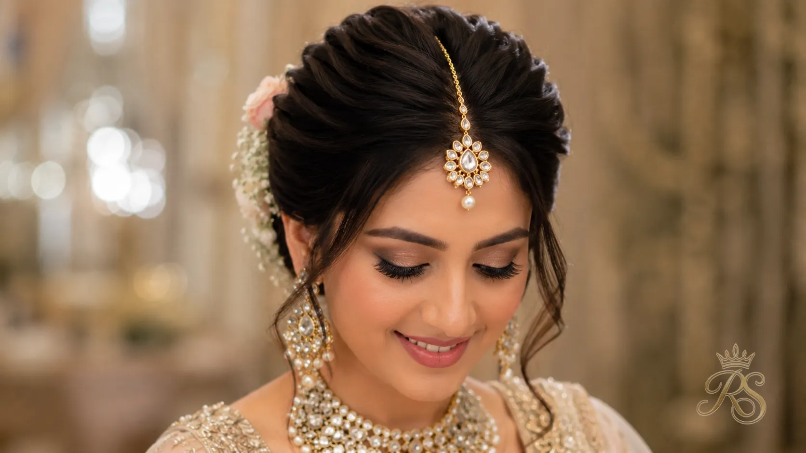
Maang Tikka
Frames the face in every close-up photograph. Match its stone colour to your choker for a cohesive, intentional look.
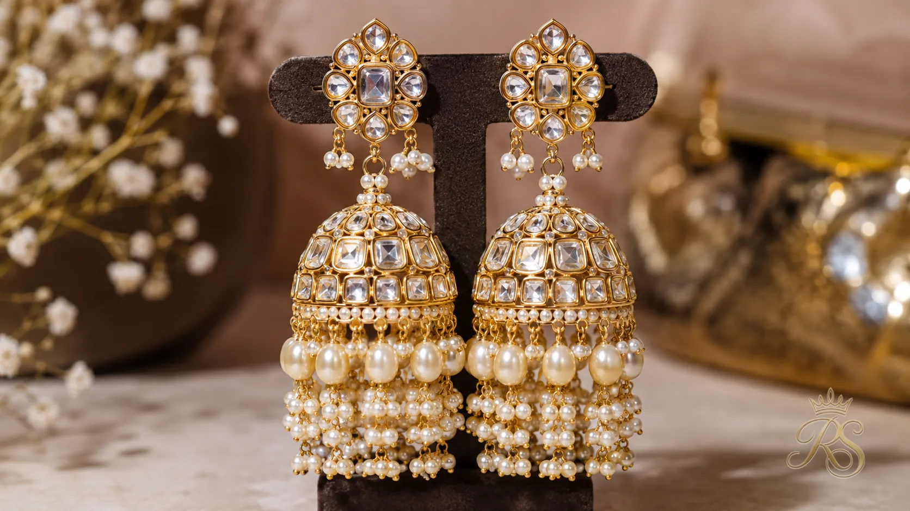
Jhumkas / Earrings
Choose weight based on your face shape and how long you'll be dancing — a lighter jhumka with a strong choker often photographs just as well as a heavy one.
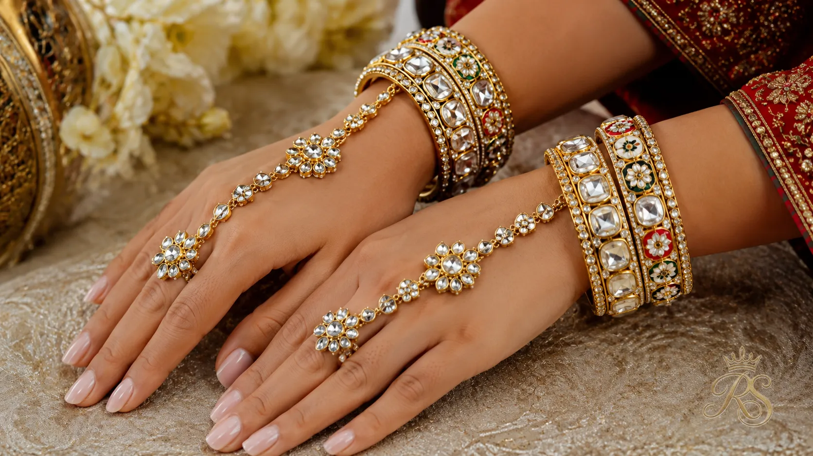
Kada & Haathphool
Bangles and the hand harness (ring-to-bracelet chain) are what elevate hand-shot photographs — increasingly a non-negotiable for couture brides.
Also Worth Considering
- Nath (nose ring): A statement piece for brides going for a fully traditional, regal look.
- Waist belt (kamarbandh): Defines the silhouette over a heavy lehenga and photographs beautifully from behind.
- Passa / jhoomar: A side hair ornament that pairs elegantly with a dupatta draped over one shoulder.
Matching Jewellery to Your Neckline
The single biggest styling mistake brides make is choosing jewellery before finalising the lehenga blouse. Neckline and jewellery need to be designed together.
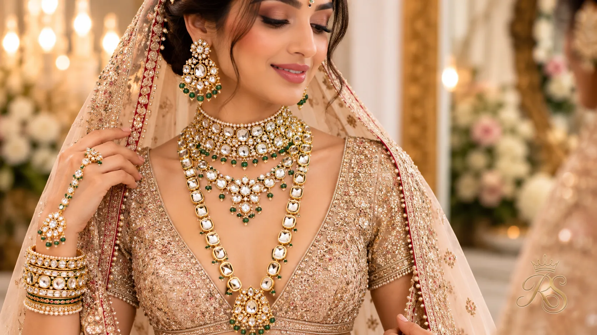
Neckline first, jewellery second. A deep-V or sweetheart blouse can carry a heavy layered set; a high, heavily embroidered neckline needs a single statement piece instead.
- High or heavily embellished necklines: Skip the choker, go straight to a long haar or just statement earrings.
- Sweetheart or boat necklines: A short choker sits beautifully at the collarbone — this is the classic polki-choker pairing.
- Deep-V or plunge necklines: Layer a choker with a longer haar to fill the vertical space elegantly.
- Off-shoulder or cape blouses: Let the earrings and maang tikka do the talking; keep the neck relatively bare.
Choosing Your Stone Palette & Metal Tone
Kundan sets can be custom-coloured to your outfit; polki is naturally diamond-white and gold. Deciding your palette early makes every other jewellery decision faster.
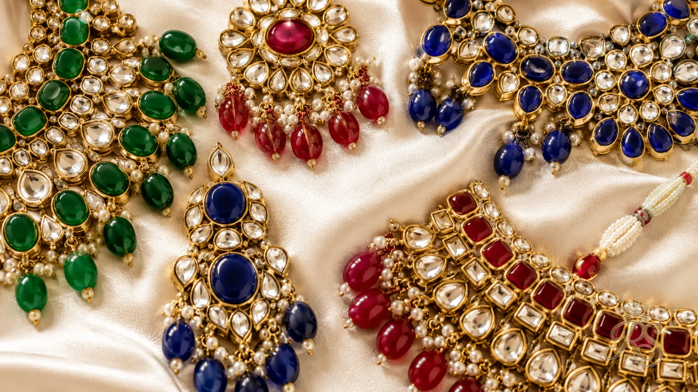
Kundan colour options: emerald, ruby, sapphire, and Basra-pearl white.
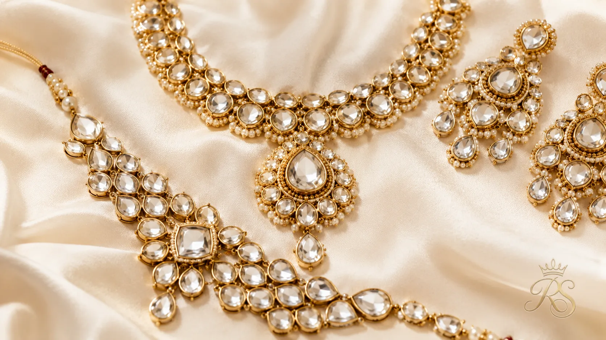
Polki's fixed palette: warm 24k gold and diamond-white, always.
If your lehenga has embroidery in multiple colours, pick the one accent colour you want your jewellery to echo — don't try to match every shade in the outfit. One deliberate echo reads as couture; matching everything reads as costume.
What Polki & Kundan Really Cost
Pricing depends heavily on whether the polki is real uncut diamond or diamond-look cubic zirconia, and whether the base metal is gold, gold-plated silver, or gold-polish brass. Here is a realistic breakdown across three tiers:
| Piece | Budget Tier Artificial / Silver-Plated |
Mid Tier Gold-Polish, Fine CZ |
Couture Tier Real Polki, 22k Gold |
|---|---|---|---|
| Choker + Haar Set | ₹8,000–20,000 | ₹40,000–90,000 | ₹3L–12L+ |
| Maang Tikka | ₹1,500–3,500 | ₹6,000–15,000 | ₹40,000–1.2L |
| Jhumka Earrings | ₹2,000–5,000 | ₹10,000–25,000 | ₹50,000–2L |
| Kada / Bangles (set) | ₹3,000–7,000 | ₹15,000–35,000 | ₹1L–4L |
| Full Bridal Set | ₹18,000–35,000 | ₹80,000–1.8L | ₹5L–20L+ |
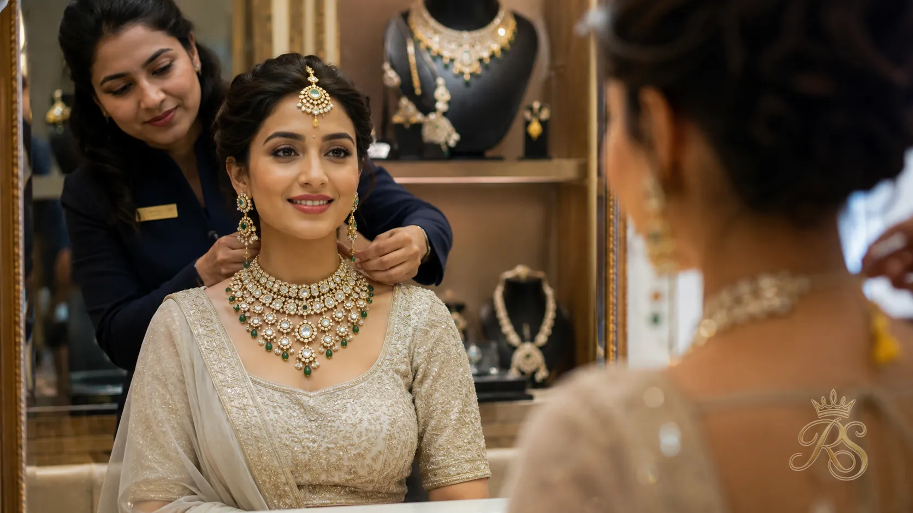
Try before you commit. Weight and how a set sits at the collarbone matter as much as the design — always try pieces on before booking.
Buy, Rent, or Restore an Heirloom
You don't have to buy everything new. Renting couture-grade sets and restoring family heirlooms are both increasingly popular — and often deliver a more distinctive look than an off-the-shelf purchase.
- Buy pieces you'll rewear — a versatile choker or jhumkas you can style for future events.
- Rent your heaviest, most elaborate wedding-day set — real polki rental typically runs 8–12% of retail value for the event.
- Restore a mother's or grandmother's set — re-stringing, re-polishing, and updating the clasp is far cheaper than buying new, and carries meaning no new purchase can.
- Mix old and new — pair an heirloom choker with newly bought earrings and maang tikka for a cohesive but personal set.
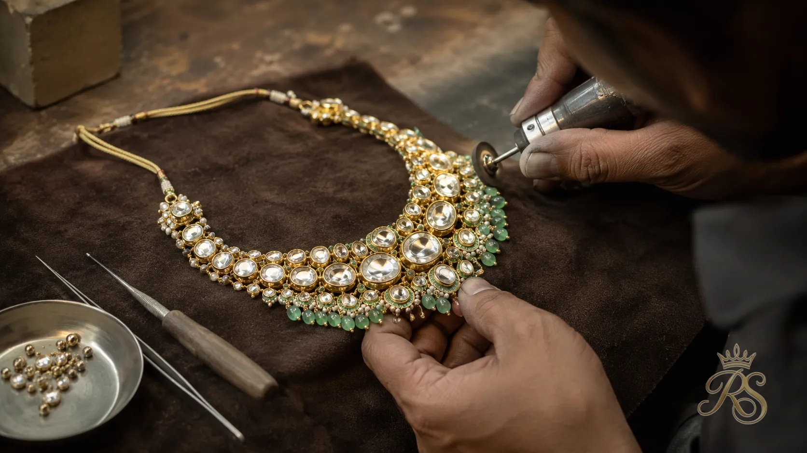
Restoration over replacement. A skilled jeweller can refresh decades-old kundan and polki work to look completely bridal-ready.
Regional Bridal Jewellery Styles
Polki and kundan aren't confined to one region — they show up differently across India's bridal traditions. Borrowing elements from a different region is a popular way to build a distinctive, couture-leaning set.
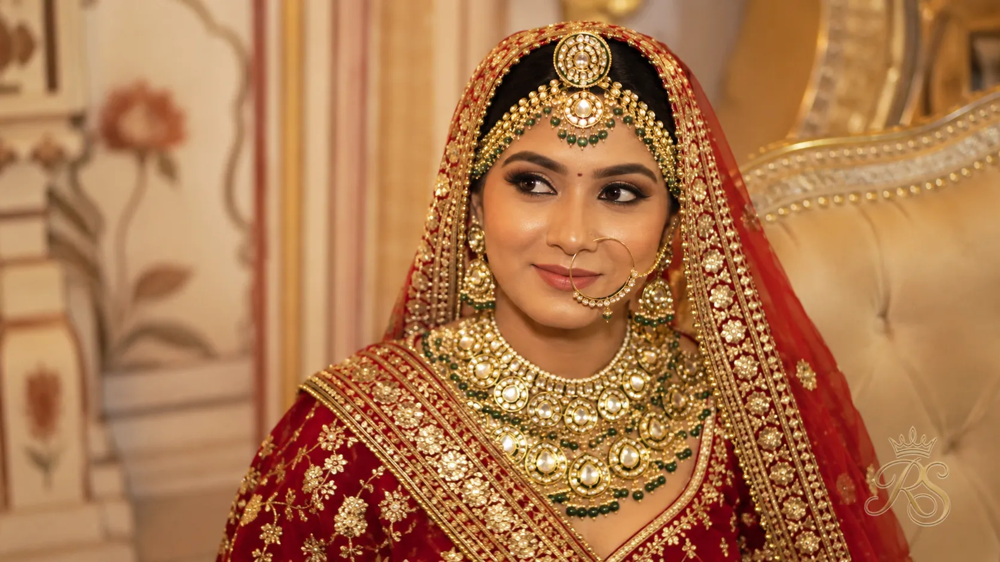
Kundan-Meenakari, Borla & Rakhdi
Layered kundan with vivid enamel reverse-work, topped with a borla (round maang tikka) — the most maximalist of the regional styles.
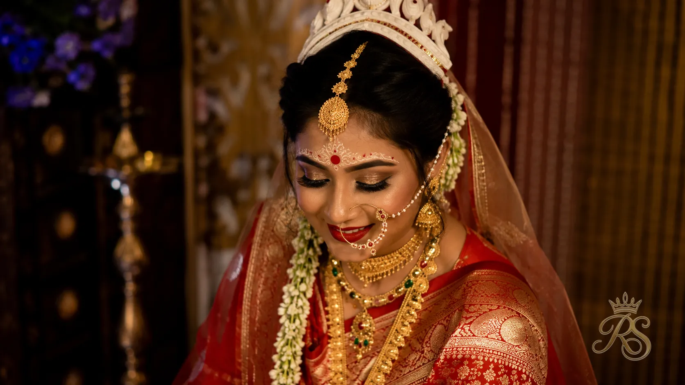
Gold-Forward with Polki Accents
Traditionally gold-heavy (chik, shakha-pola); modern Bengali brides now layer in polki chokers for a couture update.
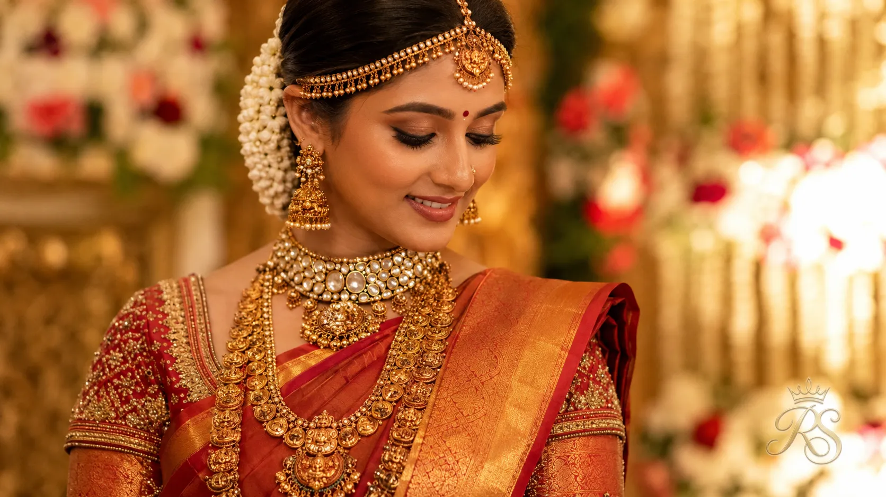
Temple Jewellery + Kundan Fusion
Temple motifs in gold, paired with a kundan choker or maang tikka — a striking, increasingly popular fusion look.
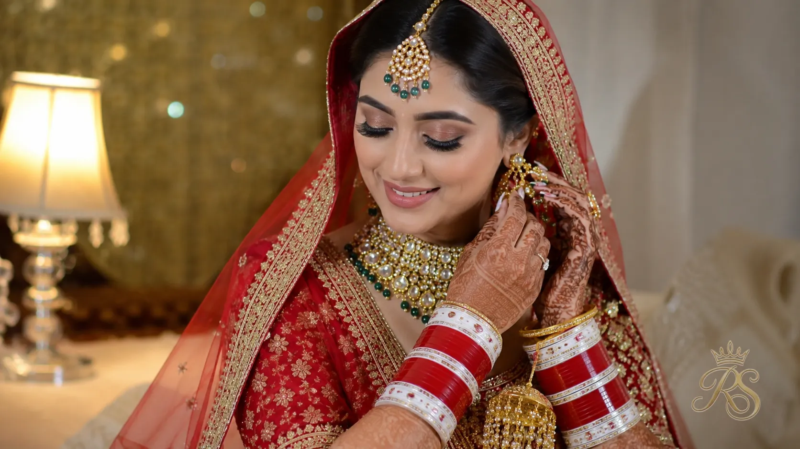
Chooda, Kalire & Polki
Red-and-white chooda and gold kalire anchor the look, styled alongside a polki choker and jhumkas for the ceremony.
How to Spot Authentic Craftsmanship
Real polki and well-made kundan have tells that mass-produced imitations don't. Learning to check for these before you buy or rent protects both your budget and your wedding-day photographs.
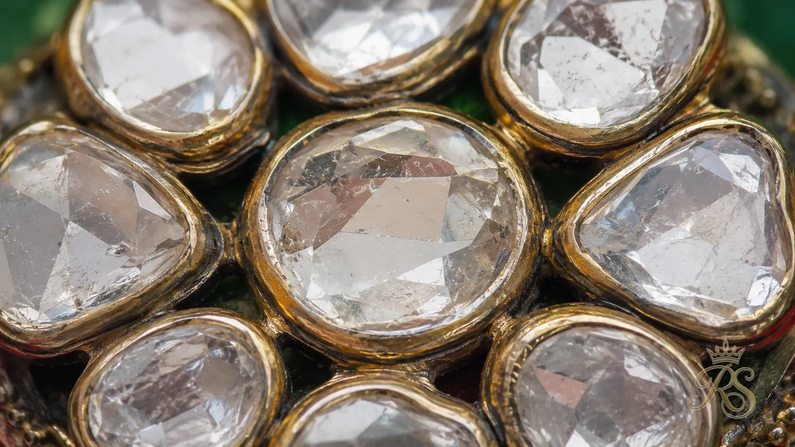
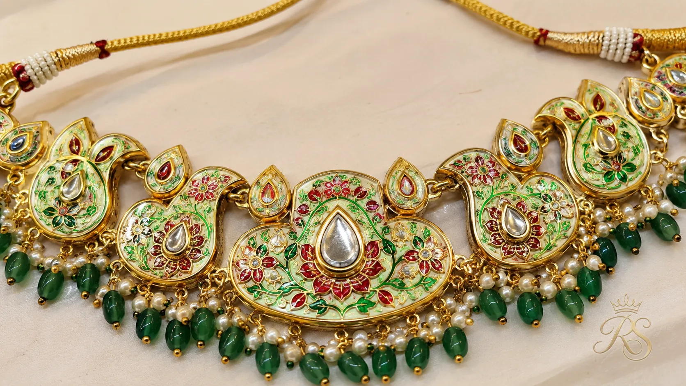
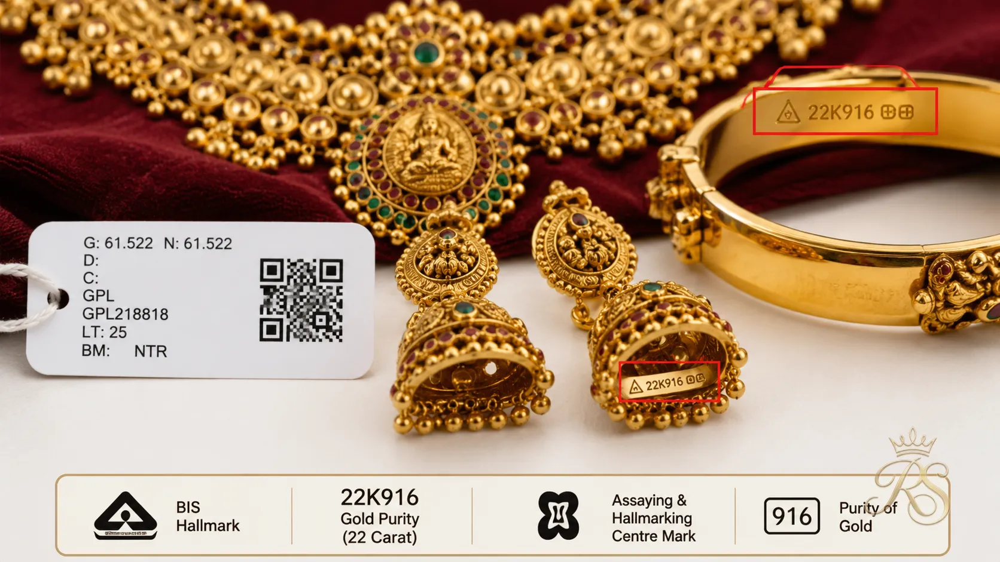
- Check the stone shapes: Real polki diamonds are irregular and slightly uneven — perfectly uniform "sparkle" usually means cubic zirconia.
- Flip it over: Genuine kundan work almost always has detailed meenakari enamel on the reverse — a blank or painted-plastic back is a red flag.
- Ask for hallmarking: Real gold-based pieces should carry BIS hallmark or an equivalent purity certification.
- Weigh it in your hand: Genuine gold-foil settings have a distinct heft compared to lightweight plated alternatives.
Styling Your Hair & Maang Tikka Placement
Even the finest jewellery set loses impact if the hairstyle fights it. The maang tikka should sit exactly at your hairline's centre parting, and your jhumkas need to be visible — not hidden under hair.
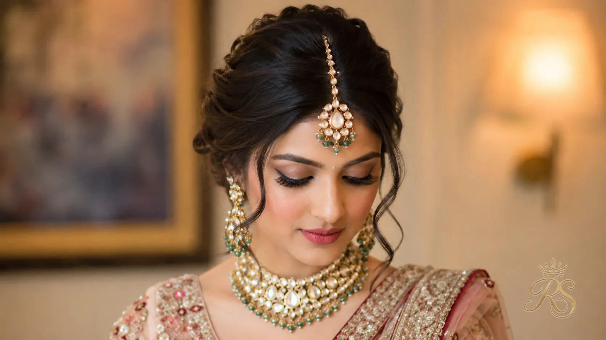
A sleek updo keeps the maang tikka the clear focal point.
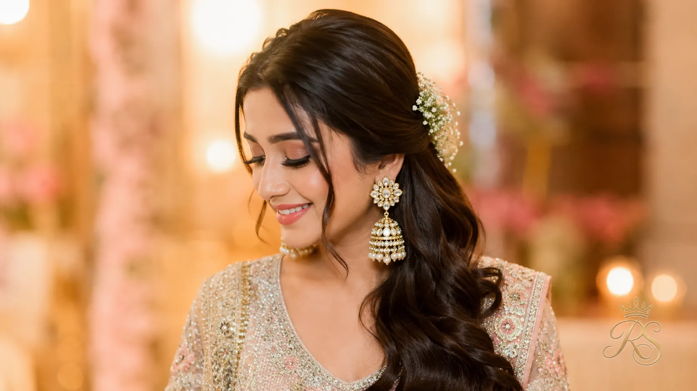
A side-swept style lets a statement jhumka take centre stage.
Do a full hair-and-jewellery trial at least three weeks before the wedding — this is the only way to catch placement issues (a tikka sitting too low, earrings hidden by hair) before the actual day.
The Art of Layering Necklaces
Layering is what separates a "couture" bridal look from a single-piece traditional one. The rule of thumb: three lengths, one focal point.
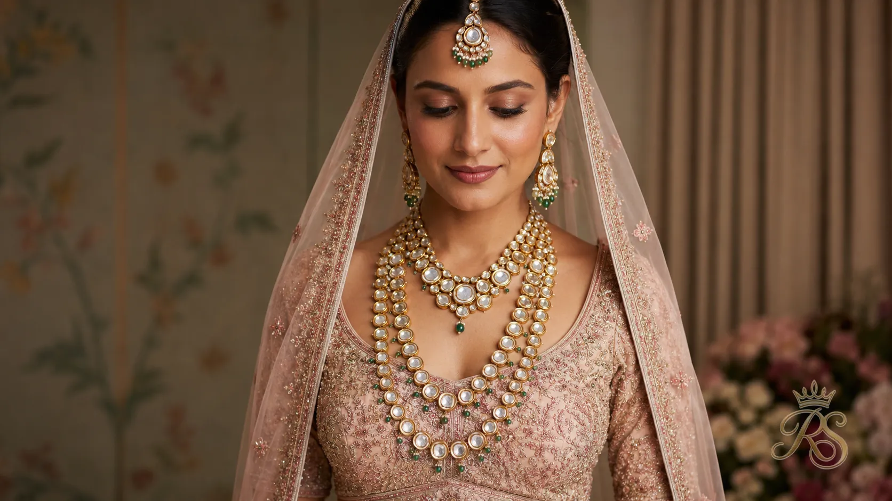
Three lengths, one hero. A short choker, a mid-length necklace, and a long haar — with the choker as the visual anchor — creates depth without clutter.
Keep earrings simpler when layering necklaces heavily — let the neckline do the statement-making, and use jhumkas as a quieter supporting piece rather than competing for attention.
Coordinating Groom & Bridesmaids Jewellery
A couture bridal look reads even stronger when it's part of a coordinated palette — not matching exactly, but echoing tone and stone colour across the wedding party.
Groom: a single polki brooch or layered mala keeps it coordinated, not matched.
Bridesmaids: lighter kundan pieces in the same stone colour, scaled down.
Your Jewellery Shopping Timeline
Couture jewellery — especially custom kundan colour-matching — takes time to source, fit, and finalise. Start earlier than you think you need to.
8–10 Months Out
Research & Shortlist
Visit jewellers, decide real vs. artificial, and lock your overall palette.
6 Months Out
Book or Order
Place custom orders or confirm rentals — couture pieces need lead time.
3 Months Out
Fitting & Restoration
Send heirloom pieces for restoration; do a first fitting of purchased sets.
6 Weeks Out
Full Trial
Complete hair, makeup, and jewellery trial together — not separately.
2 Weeks Out
Final Collection
Collect rentals and purchases; confirm insurance for high-value pieces.
Avoid
Last-Minute Buys
Rushed purchases in the final week limit choice and negotiating power.
The Look You'll Want to See in Every Photo
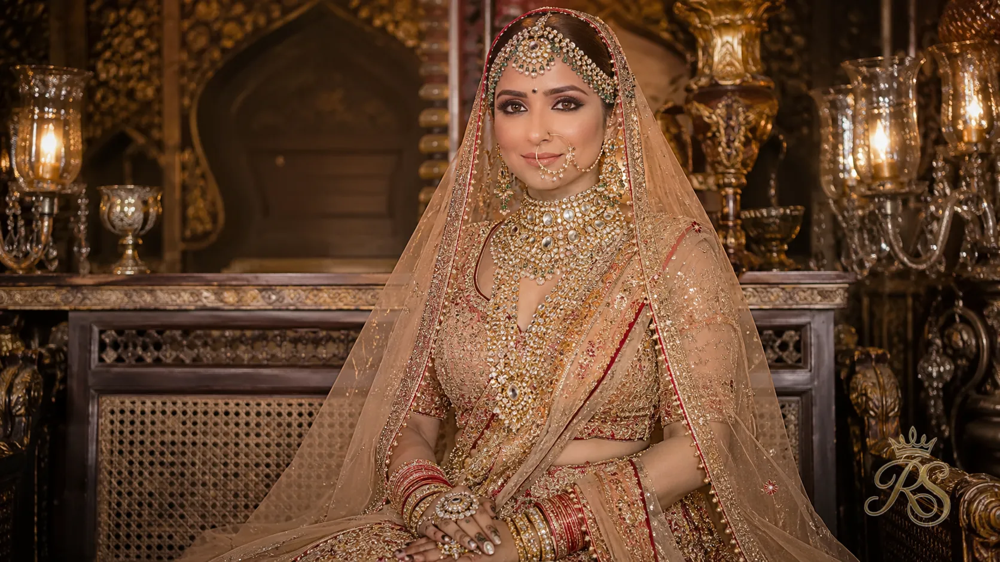
The finished look — polki and kundan, chosen deliberately, styled together, and worn with a bride's own sense of scale and colour.
The best bridal jewellery choice isn't the heaviest or the most expensive one — it's the set that suits your neckline, your palette, and the story you want your photographs to tell. Start with your non-negotiable pieces, build your palette, and let the rest of the set follow.
"Polki and kundan don't go out of style because they were never trying to be trendy — they were built to be timeless."